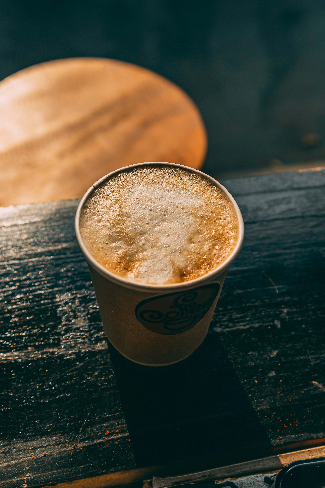
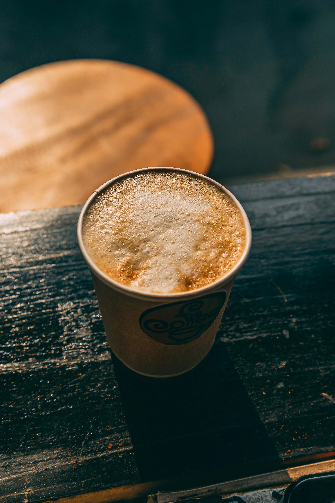

BREW BEANS Co.
BREW BEANS Co.Coffee tastes better when it is strong!
Do you agree?
A 2007 review of clinical trials found that drinking coffee is generally safe within usual levels of intake and is more likely to improve health outcomes than to cause harm at doses of 3 or 4 cups of coffee daily. Exceptions include possible increased risk in women having bone fractures, and a possible increased risk in pregnant women of fetal loss or decreased birth weight. Results were complicated by poor study quality, and differences in age, gender, health status, and serving size.
Types
Coffee beans are the seeds of a fruit called a coffee cherry. Coffee cherries grow on coffee trees from a genus of plants called Coffea. There are a wide variety of species of coffee plants, ranging from shrubs to trees.
TOP BRANDS
The brand is not known for sourcing and roasting the best coffee beans. Most of their coffee beans are dark roasted, meaning, they taste bitter. And many consumers, who know their coffee, complain that Starbucks coffee has a distinct burnt taste.

Founded in 1950, Dunkin' is one of the world's leading franchisors of Quick Service Restaurants (QSRs). With around 13,500 stores across 42 countries, Dunkin' has been winning the hearts of customers with its delectable range of freshly brewed coffee and espresso, donuts, baked goods and more.

Costa coffee is one of the largest coffee chains in Britain. It has more than 3000 outlets serving coffee with around 18 thousand branches in the whole world. Costa coffees are medium roasted, which makes them smoother, sweeter, and nuttier.
Owned by McDonald's, McCafe is one of the leading coffee chains in countries like Australia and New Zealand. McCafé enjoys the benefit of having a vast presence (Because let's face it, McDonald's is everywhere!) As McDonald's expands worldwide, there is a decent chance of McCafé doing the same.
Peet's coffee is said to be fairly stronger than the coffee Starbucks serves so it might not be for everyone. Peet's has a long history of serving darker roasted Arabica coffee. The coffee supposedly has a variety of flavours .
GALLERY


 
